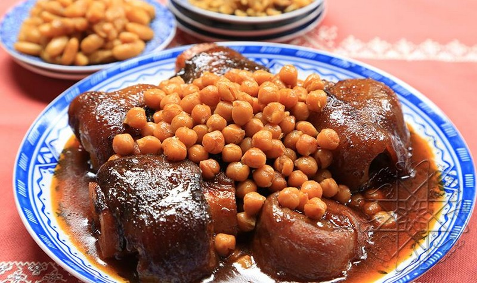
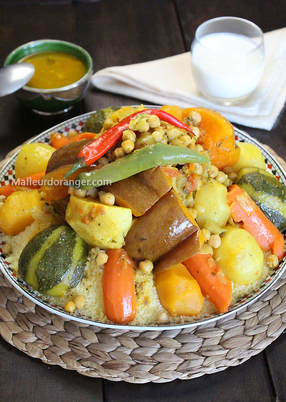

les plats des Marocaine
La cuisine marocaine reflète l'histoire du pays et les différentes populations qui s'y sont installées. Le tajine vient des Berbères. Ceux-ci ont apporté les dattes, le lait, les céréales, le pain, l'huile d'olive, les amandes, les fruits et les herbes. Les Arabes ont apporté les épices, sans oublier les Britanniques qui, au xviiie siècle, ont importé le fameux thé. Mais les deux grandes influences qu’a connues la cuisine marocaine restent en fait l’influence arabe et andalouse. Arabe en ce qui concerne les M’qalla, M’hammar et M’Aammar, et andalouse pour ce qui est M’jammar, harira et pour tout le reste. Le kefta et le baklawa sont d'origine ottomane, bien que le Maroc n'ait pas été conquis par les Turcs, il a été réceptif à certaines de leurs influences, par exemple dans le domaine culinaire.
|  |  |
 |
| Recette | Recette | Recette |